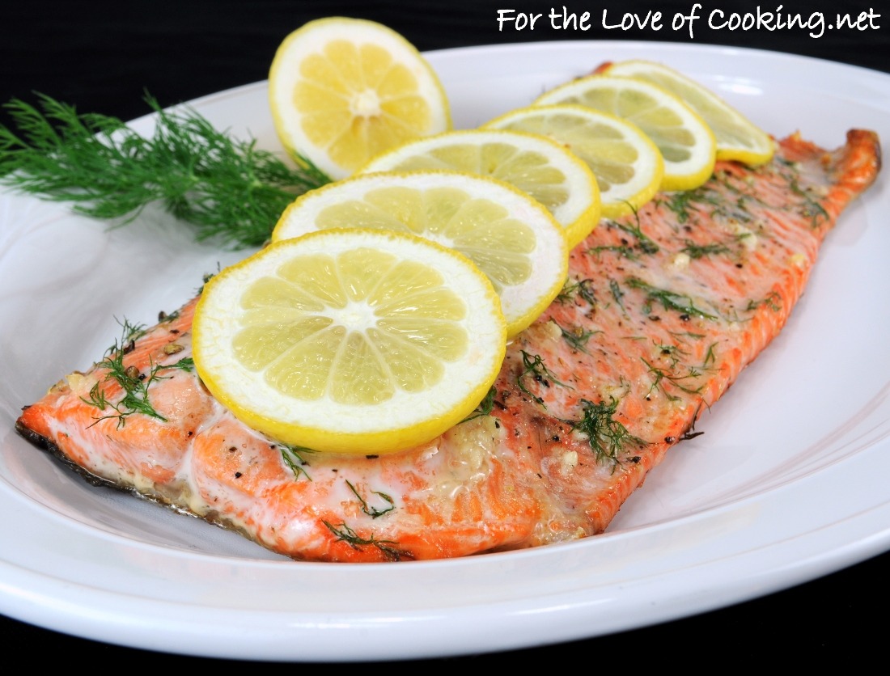

Garlic and Dill Salmon

Description
Marinated in a paste of fresh dill, garlic, and olive oil, this baked salmon is wonderfully simple to prepare AND great eating.
Ingredients
- 2 (1.5 pound) salmon fillets
- 1 head garlic, peeled
- 1 ounce fresh dill, chopped
- ½ cup olive oil
- 1 teaspoon salt and pepper to taste
Steps
- In a food processor, process garlic to a rough mince, add dill and olive oil and pulse a few times to combine.
- Lay fish fillets in a baking dish, skin side down. Rub garlic mixture over fish. Refrigerate for 2 hours.
- Preheat an oven to 375 degrees F (190 degrees C).
- Bake in preheated oven for 15 minutes. Do not overcook.
Return to main page